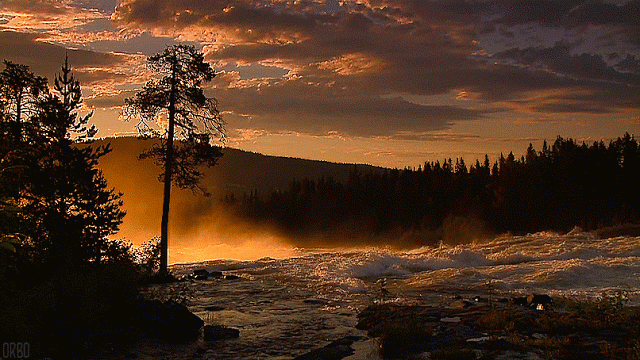

Está sitiuada en el este de Europa y en el norte de Asia, tiene fronteras con 16 estados y su línea fronteriza
es la más larga del mundo con 60 mil kilómetros de extensión. Rusia posee la cuarta parte de todos los bosques del mundo,
más que cualquier otro país. La zona continua de los bosques se extiende desde las fronteras occidentales del país
hasta la costa del Océano Pacífico. Las costas de Rusia están bañadas por las aguas de 12 mares, en Rusia hay decenas de miles de ríos
y alrededor de dos llones de lagos, entre los cuales se destaca el lago más grande del mundo que se llama Mar Caspio
(por sus dimensiones se parece más a un marque a un lago) y el lago más profundo de agua dulce, el Baikal.

en el referendum nacional celebrado el 12 de diciembre de 1993. El Jefe del Estado es el Presidente elegido por los ciudadanos
de Rusia para un período de 4 años. En el mes de marzo de 2004, Vladimir Putin fue reelegido para un segundo mandato de cuatro años.
El Presidente al mismo tiempo es el Comandante en Jefe de las Fuerzas Armadas de la Federación de Rusia.
El poder ejecutivo en el país lo ejerce el Gobierno, encabezado por el primer ministro, mientras que el poder legislativo
recae en la Asamblea Federal que consta de dos Cámaras: el Consejo de la Federación (Cámara Alta) y la Duma del Estado (Cámara Baja).
una región autónoma y 9 distritos autónomos. Moscú es la capital de Rusia (más de 10 millones de habitantes). Las ciudades grandes con más de 1 millón de habitantes son
: San Petersburgo (4.6 millones), Novosibirsk, Nizhni Nóvgorod, Ekaterinburgo, Samara, Omsk, Cheliabinsk, Kazan, Perm, Ufa, Rostov del Don y Volgogrado.

La densidad de población más grande se registra en la parte central del país.
Los rusos constituyen aproximadamente el 80% de la población. Además de los rusos, en Rusia existen más de 100 naciones
y pueblos, los más numerosos de los cuales son los ucranianos y tártaros. El idioma oficial de la comunicación
internacional es el ruso, aunque las idiomas de todos los pueblos tienen derechos iguales. La mayor parte de los creyentes
profesan la fe cristiana ortodoxa. También están presentes el islam, el catolicismo, el judaismo, el budismo.

marítimo en el litoral del Mar Báltico y templado monzónico en el sur del Extremo Oriente. En el mismo día en el litoral del Mar Negro se abre la temporada de baños
y en el litoral del Mar Oriental de Siberia se desencadena una tormenta de nieve. La parte más poblada del territorio de Rusia se encuentra en la zona climática templada.
En Moscú, San Petersburgo, en la zona del Anillo de Oro y del río Volga el verano es caluroso y el invierno es suave y nevoso, lo que atrae a los turistas de todo el mundo.
la gente de Moscú y San Petersburgo se prepara para dormir. Se mide desde + 2 GMT en Kaliningrado hasta + 12 en Kamchatka y Chukotka. En Moscú y San Petersburgo son + 3 GMT.
A finales de marzo los relojes pasan al horario de verano (adelantando una hora) y a finales de octubre al horario de invierno (atrasando una hora).
El pueblo talentoso de Rusia dio al mundo escritores como Tolstoy y Dostoevskiy, Gorki y Chékhov. Cinco representantes del pueblo ruso obtuvieron el Premio Nobel de literatura
: Bunin, Shólokhov, Pasternak, Solzhenitsin y Brodskiy. Todo el mundo conoce la música de los compositores rusos Chaikovskiy, Rakhmáninov, Stravinsky, Prokofiev, Shostakóvich, Shnitke.
Malévich y Kandinsky, representantes de la vanguardia rusa, se destacaron por encarnar las nuevas ideas en la pintura y Serguey Eisenstein , Andrey Tarkovsky en el arte cinematográfico.
Los descubrimientos y las invenciones de los científicos rusos en el campo de la química, la física nuclear, la aviación y la industria militar se conocen en todo el mundo.
En el año 1961 en Rusia (en aquella época la Unión Soviética) fue llevado a la práctica el primer vuelo del hombre al espacio cósmico. Goza de fama mundial el ballet clásico ruso
con sus destacadas estrellas Anna Pávlova,Galina Ulanova, Maya Plisétskaya, Rodolfo Nureev, Mikhail Baryshnikov. Todos conocen los éxitos de los deportistas rusos: nadadores, atletas, gimnastas,
ajedrecistas, campeones de patinaje artístico y jugadores de hockey.

El caviar negro ruso se conoce en todo el mundo igual que la vodka de 40 grados. De las bebidas alcohólicas más suaves los rusos prefieren los licores base de frutas y bayas y de las bebidas no alcohólicas el kvas de pan.
En Moscú, San Petersburgoy en la mayoría de las ciudades y centros turísticos hay muchos restaurantes y cafes para todos los gustos y todos los bolsillos. En las ciudades capitales – Moscú y San Petersburgo
– a los visitantes les ofrecen no solamente los platos tradicionales rusos sino también la cocina de casi todos los países del mundo.

| DIA | QUE ES |
|---|---|
| 1-5 de enero – | Año Nuevo |
| 7 de enero – | Navidad ortodoxa |
| 23 de febrero – | Día del Defensor de la Patria |
| 8 de marzo – | Día Internacional de la Mujer |
| 1 de mayo – | Día de la Solidaridad Internacional de los Trabajadores |
| 9 de mayo – | Día de la Victoria |
| 12 de junio – | Día de la Soberanía Nacional |
pal profe Mensaje